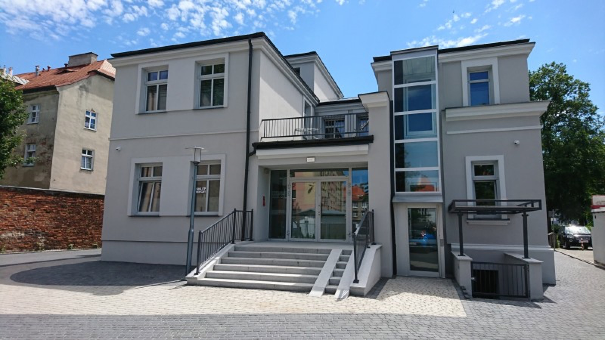
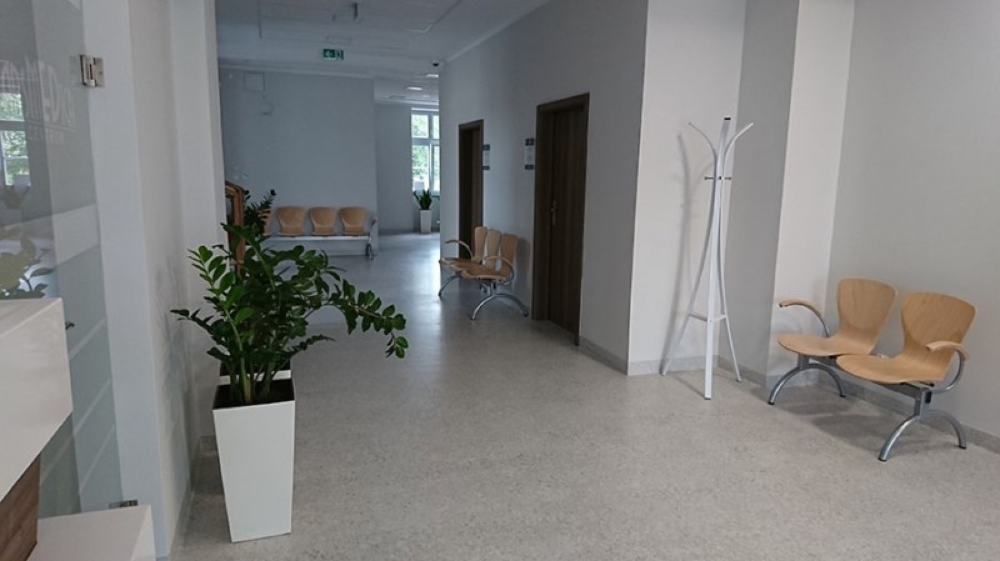
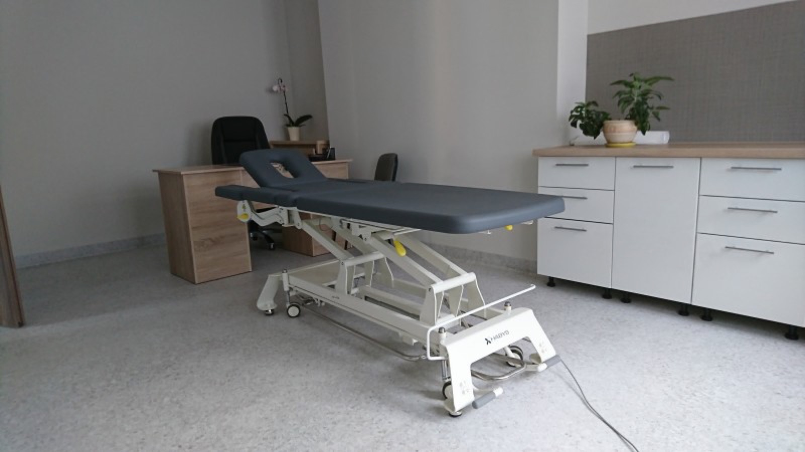

Paweł Andrzejczak
Internista
Medycyna rodzinna
Godziny przyjęć
- poniedziałek 8.00 - 13.00
- wtorek 13.00 - 18.00
- środa 8.00 - 13.00
- czwartek 8.00 - 13.00
- piątek zamiennie- dni parzyste od 13.00 - 18.00; dni nieparzyste 8.00 - 18:00
Poradnia Podstawowej Opieki Zdrowotnej
pn-pt: 8:00- 18:00
Jak dojechać



Gabinet zabiegowy czynny jest w godz. pracy przychodni.
Pobieranie krwi codziennie od 7:30 do 11.00

Nasza przychodnia świadczy usługi w ramach umowy z NFZ w dniach od poniedziałku do piątku w godz od 8.00 do 18.00
poniedziałek - piątek 7:30 - 18.00
Punkt pobrań badań laboratoryjnych czynny jest od poniedziałku do piątku w godz od 7.30 do 11.00.
Odbiór wyników w dniu następnym od godz 14.00
Internista
Medycyna rodzinna
Specjalista medycyny rodzinnej
Specjalista medycyny rodzinnej
Lekarz Pediatra
Specjalista medycyny rodzinnej
Rezydent medycy rodzinnej
Po godz 18.00 i w dni świąteczne opiekę medyczną świadczy Wojewódzki Szpital Zespolony w Kaliszu , ul. Poznańska 79 (budynek Pogotowia)
Zadbaj o zdrowie – skorzystaj z profilaktyki i opieki koordynowanej
Z przykrością informujemy, że system naszego podmiotu przetwarzającego, tj. MyDr Sp. z o.o. z siedzibą w Warszawie, padł ofiarą cyberataku, w wyniku którego doszło do naruszenia poufności Pani/Pana danych osobowych, a w niektórych przypadkach również danych osobowych Pani/Pana przedstawiciela ustawowego lub osoby upoważnionej do dostępu do dokumentacji medycznej.
Chcielibyśmy podkreślić, że nie oznacza to, że Pani/Pana dane zostały odczytane, wykorzystane lub upublicznione. Zespoły MyDr oraz zewnętrzni eksperci stale monitorują sytuację i nie wykryli, aby dane objęte incydentem zostały publicznie udostępnione. Przeprowadzone przez MyDr analizy forensic potwierdziły, że incydent został opanowany oraz że nie ma dowodów wskazujących na dalszy nieuprawniony dostęp do systemów.
Ustalenia dokonane przez MyDr przy wsparciu ekspertów zajmujących się zewnętrzną analizą wskazują, że incydent obejmował ograniczony zakres danych przed 12 kwietnia 2024 r. oraz, w nielicznych przypadkach, danych zawartych w anulowanych skierowaniach na badania medyczne wystawionych po tej dacie.
Dane pacjenta przed 12 kwietnia 2024 r. Jeżeli incydent objął Pani/Pana dane przetwarzane przed 12 kwietnia 2024 r., wśród danych objętych incydentem mogły znaleźć się Pani/Pana: imię, nazwisko, adres zamieszkania, dane kontaktowe, numer PESEL, dane dotyczące zdrowia, ubezpieczenia społecznego, i (jeśli zostały podane) informacje dotyczące pracodawcy, lub inne dane identyfikacyjne.
Dane w anulowanych skierowaniach. Jeżeli incydent objął Pani/Pana dane zawarte w anulowanych skierowaniach na badania medyczne, wśród danych objętych incydentem mogły znaleźć się Pani/Pana: imię, nazwisko, adres zamieszkania, dane kontaktowe, numer PESEL oraz ograniczony zakres danych dotyczących zdrowia zawartych w anulowanych skierowaniach.
Dane przedstawiciela ustawowego lub osoby upoważnionej do dostępu do dokumentacji medycznej. Jeżeli jest Pani/Pan przedstawicielem ustawowym pacjenta lub osobą upoważnioną do dostępu do jego dokumentacji medycznej, zakres danych objętych incydentem mógł zawierać Pani/Pana dane wskazane w tej dokumentacji. W zależności od zakresu przekazanych informacji może to dotyczyć takich danych jak: imię i nazwisko, adres zamieszkania, dane kontaktowe, numer PESEL oraz informacja o stopniu pokrewieństwa lub rodzaju relacji z pacjentem.
Mimo że prowadzony przez MyDr stały monitoring nie wykazał dotychczas żadnych przypadków wykorzystania ani publicznego ujawnienia danych, nie można wykluczyć, że, ze względu na charakter incydentu, w określonych okolicznościach może on potencjalnie wiązać się z wysokim ryzykiem dla praw lub wolności osób, których dane zostałyby niewłaściwie wykorzystane. Chcemy pomóc Pani/Panu zachować bezpieczeństwo na wypadek zmiany okoliczności, dlatego przekazujemy informacje o ewentualnych konsekwencjach oraz zalecanych środkach ostrożności, które mogą pomóc w ochronie danych osobowych i ograniczeniu potencjalnych skutków incydentu.
Wśród danych objętych incydentem mógł znajdować się numer PESEL, który w połączeniu z imieniem i nazwiskiem oraz danymi kontaktowymi, w określonych sytuacjach, mógłby posłużyć osobom nieuprawnionym do działań niezgodnych z prawem. W szczególności, jeśli dane te zostałyby publicznie ujawnione, mogłyby zostać użyte przez osoby nieuprawnione do:
Incydent mógł dotyczyć również danych dotyczących zdrowia, których nieuprawnione użycie może naruszać Pani/Pana prawa, w szczególności, gdyby osoby trzecie próbowały wykorzystać te informacje:
Raz jeszcze chcemy podkreślić, że warto zachować ostrożność i czujność, jednak na obecnym etapie prowadzony przez MyDr monitoring nie wykazał żadnych przypadków wykorzystania ani publicznego ujawnienia danych. Nie ma zatem powodów do niepokoju.
W przypadku numeru PESEL:
W przypadku danych dotyczących zdrowia:
Bez względu na zakres danych osobowych, w przypadku podejrzenia, że zostały one wykorzystane niezgodnie z prawem, można zgłosić to na Policję. Informacje o sposobie zgłoszenia znajdują się pod adresem: https://www.gov.pl/web/gov/zglos-przestepstwo.
Podkreślamy ponownie, że prowadzony przez MyDr monitoring nie wykazał dotychczas żadnych przypadków wykorzystania ani publicznego ujawnienia danych.
Aby ograniczyć negatywne skutki wykrytego ataku MyDr Sp. z o.o., podjął następujące działania:
Nasza placówka - jako administrator Pani/Pana danych osobowych, po otrzymaniu zawiadomienia o naruszeniu od MyDr Sp. z o.o., dokonała zgłoszenia tego naruszenia do Prezesa Urzędu Ochrony Danych Osobowych.
W przypadku dodatkowych pytań dotyczących zakresu incydentu prosimy o kontakt dane@mydr.pl.
Z poważaniem
Zarząd Arsmedica sp. p. lekarzy
Lekarz Medycyny Pracy i Transportu Piotr Lisowski
Lekarz Ortopeda Piotr Wojciechowski
Usługi Pielęgniarskie i Informatyczne Joanna Urban
Do potwierdzenia: oferta POZ podaje 8:00–18:00, stopka 7:30–18:00.